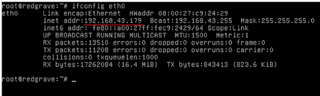
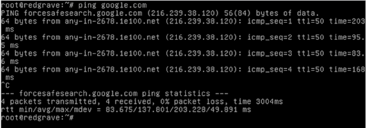
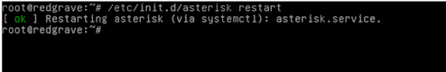
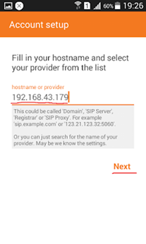
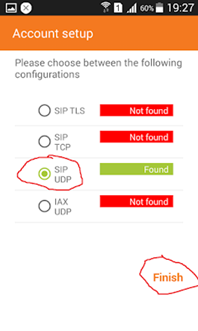

Asterisk adalah perangkat lunak gratis dan sumber terbuka yang dirancang untuk membuat aplikasi komunikasi, seperti sistem telepon IP, Gateway VoIP, server konferensi, dan solusi khusus lainnya untuk perusahaan atau organisasi Anda. Itulah mengapa ini sangat digunakan oleh banyak instansi, pemerintah, dan perusahaan. ZoiPer adalah perangkat lunak telepon (softphone), yang memungkinkan Anda melakukan obrolan, suara, panggilan video, dll.
Konfigurasi Software Asterisk di VM Debian 11
- Buka VirtualBox dan ubah pengaturan jaringan menjadi Bridged Adapter dengan interface WLAN (Wi-Fi) sebagai bridge.
- Buka Debian dan buka konfigurasi menggunakan perintah:
#nano /etc/network/interfaces. Kemudian ubaheth0menjadiDHCP. - Cek IP Address dengan perintah:
#ifconfig eth0.
 - Cek koneksi internet dengan perintah:
ping google.com.
 - Masuk ke konfigurasi repository dengan perintah:
#nano /etc/apt/source.list, lalu tambahkan repository internet dari Debian 8 yang sesuai dengan jenis Linux dan versinya. - Update repository dengan perintah:
#apt-get update. - Install Asterisk menggunakan perintah:
#apt-get install asterisk. - Buka konfigurasi
sip.confmenggunakan perintah:#nano /etc/asterisk/sip.conf, lalu tambahkan script seperti berikut:[111] ; Nomor telepon context = nama_konfigurasi type = nama_grup username = nama_kontak secret = password_nomer_telepon host = dynamic ; Gunakan dynamic agar lebih fleksibel - Buka konfigurasi
extensions.confdengan perintah:#nano /etc/asterisk/extensions.conf, lalu tambahkan script konfigurasi sesuai kebutuhan. - Restart Asterisk dengan perintah:
#/etc/init.d/asterisk restart.

Tanam Extention Asterisk pada Zoiper
- Install aplikasi Zoiper di smartphone 1.
- Buka aplikasi dan login menggunakan akun yang telah dibuat di VOIP Server:
- Username:
nomor_telepon@IP_Address - Password:
secretdari konfigurasi VOIP Server
- Username:
- Masukkan IP Address dari VOIP Server, lalu klik Next.
 - Langsung skip saja langkah selanjutnya.
- Pilih protokol SIP, kemudian klik Finish.
 - Ulangi langkah yang sama di smartphone 2.
Proses instalasi dan konfigurasi selesai.
Leave a Reply